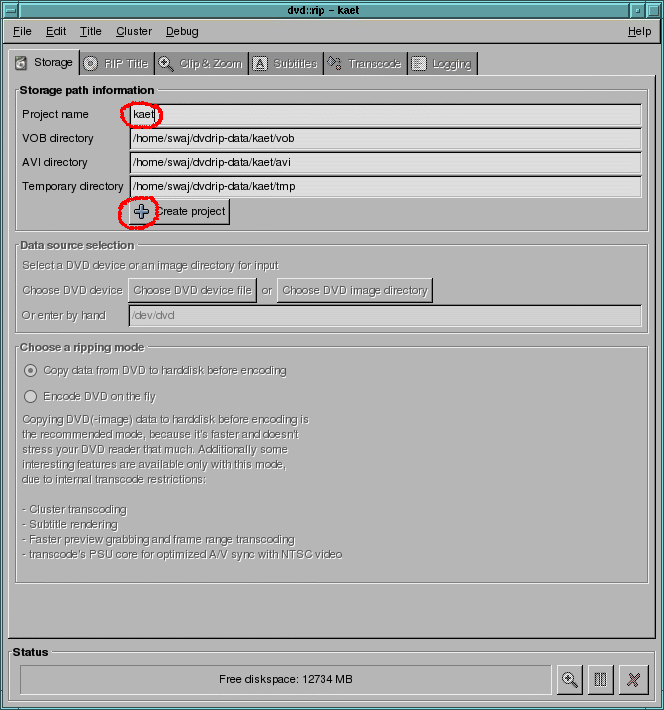
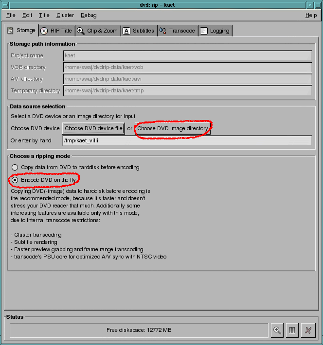
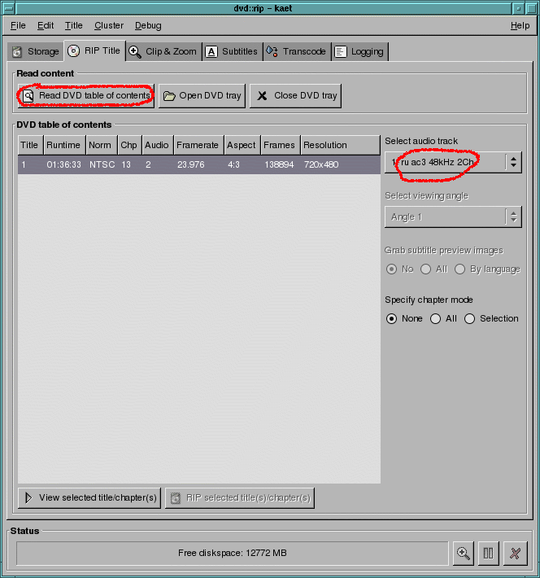
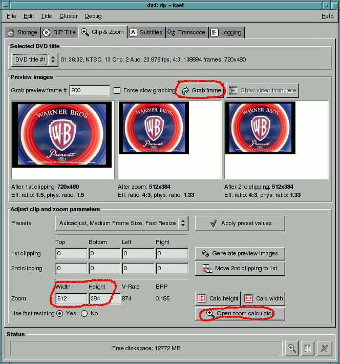
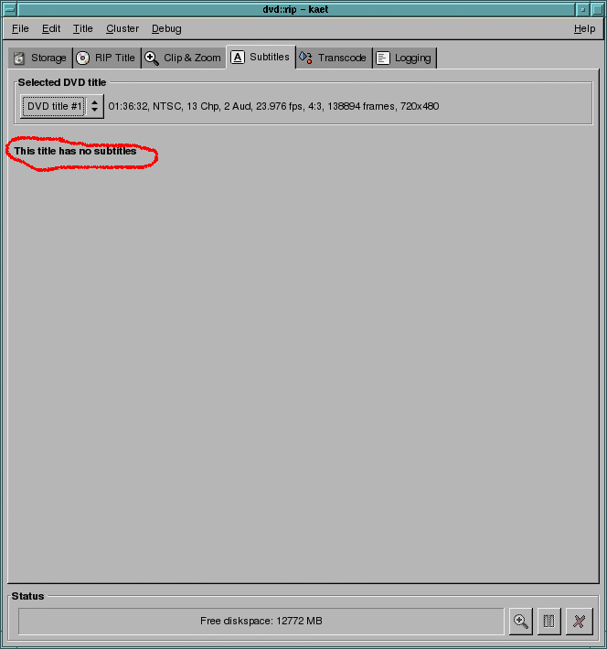
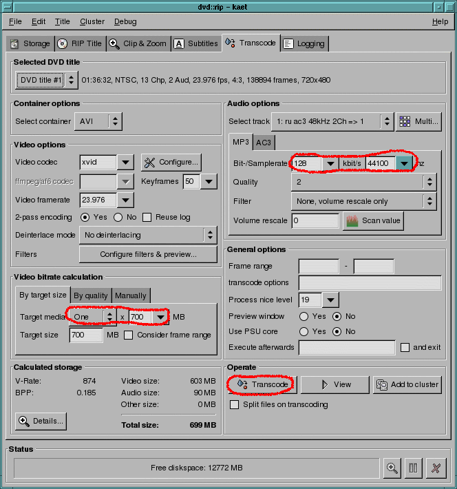

1. Выбираем File->New Project. Набираем имя и жимкаем 'Create Project'

2. Выбираем где находится копия диска (где лежит каталог VIDEO_TS, а не сами файлы!), отмечаем 'Encode DVD on the fly':

3. Зачитываем оглавление диска и выбираем звуковую дорожку:

4. Разрешение нашего rip'а, кликаем 'Open zoom calculator' и выбираем нужное. "Хорошие" разрешения выделены красным цветом. Хорошесть их в том, что размер кратен 8 и проблемы с разными проигрывателями минимальны. Можно кликнуть 'Grab frame' и посмотреть как примерно будет выглядеть соотношение оригинала и rip'а:

5. Если субтитров нет, все ясно. В противном случае самое лучшее - выбрать внешние субтитры. Тут выбирать не из чего:

6. Задаем параметры звука и желаемый размер rip'а. Кодек XviD по умолчанию и это разумный выбор. Жмем 'Transcode' и через некоторое время (несколько часов, зависит от скорости компьютера) rip будет готов:
